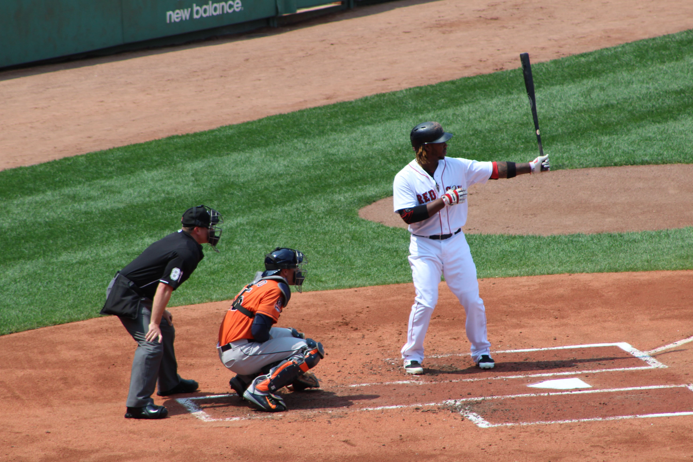

Red Sox

Metadata
| Date | Location | F-stop | Exposure time | ISO |
|---|---|---|---|---|
| 7/5/2015 | Boston, MA | f/8 | 1/500s | ISO-250 |
| Date | 7/5/2015 |
|---|---|
| Location | Boston, MA |
| F-stop | f/8 |
| Exposure time | 1/500s |
| ISO | ISO-250 |
Background
This photo was taken while the Boston Red Sox were hosting the Houston Astros at Fenway. Of the MLB stadiums I have had the chance to photograph, Fenway is my favorite because the vintage (and cramped!) layout of the stadium drastically improves the effectiveness of a zoom lens from the standing room areas of the stadium.